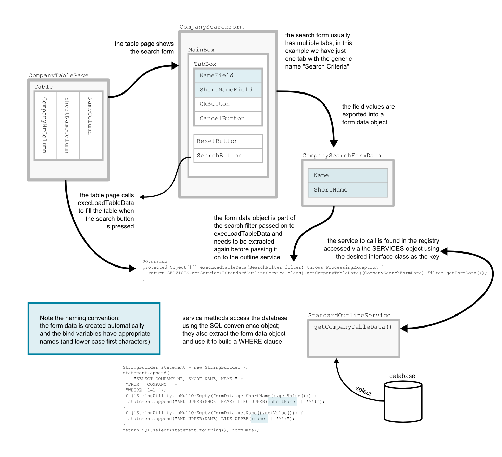
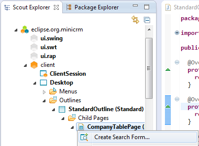
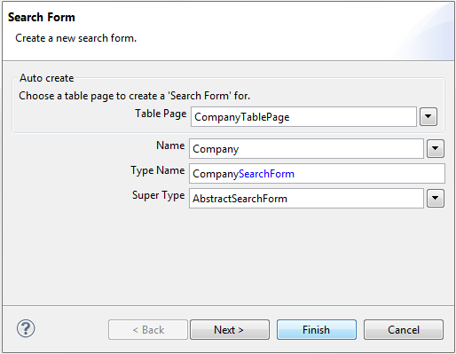
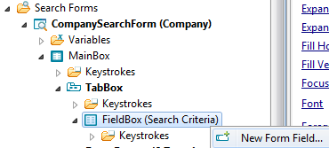
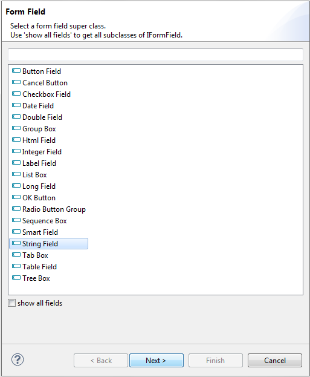
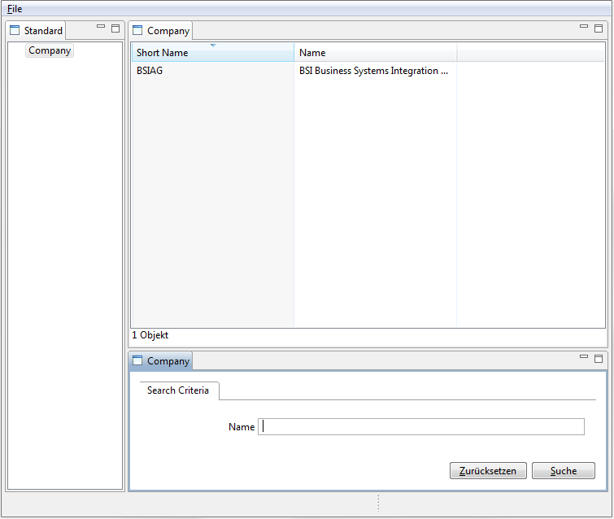
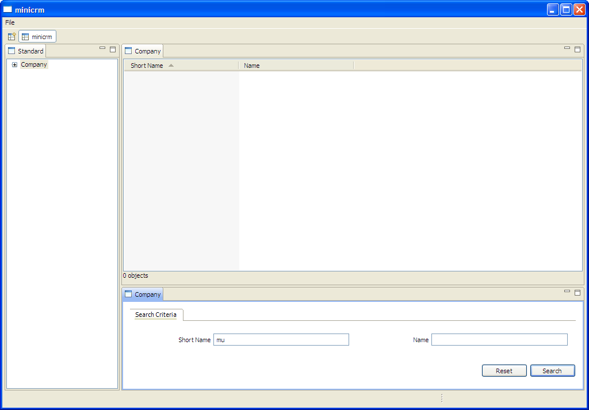

| Add a search form | ||
|---|---|---|
| | |
| Write the first page | Add a form to edit the data | |
Once we have created a table page and implemented the service to get the table data, we can take advantage of a feature the Scout SDK offers: it can create a search form based on the existing information.
The alternative, of course, is to create the search form manually.
Once you have all that, it's time to add a form to edit the data.
We need to create a search form that will be shown together with our newly created table page. The values provided by the user (i.e. the chosen search criteria) are packed into a FormData object, which is passed along to the outline service. There, we need to build an appropriate WHERE clause.

Go to the CompanyTablePage, right-click and choose Create Search Form. The created search form contains a field for each column defined on the base table page.

Use Company as the name and click Finish.

Done! What did Scout SDK do?
For each non-primarykey-column there has already been generated a field for you in the search form. This is already enough to show a ''search form''
If you want to add fields to a search form, expand your searchform like on the picture below and right click on FieldBox (Search Criteria) and pick New Form Field... from the menu.

Pick String Field from the list and click Next. Set the name to the desired name and click Finish.


There is one missing piece, obviously. The service that gets the actual data needs to build some sort of constraint (a WHERE clause to the SQL statement) to filter the returned rows.
In order to constrain the SQL statement for the company outline, we have to adapt the service operation getCompanyTableData and add a parameter searchFilter of the type CompanySearchFormData to the method. Do that for both the service interface IStandardOutlineService and the service implementation StandardOutlineService. There are two easy ways to find them: Ctrl+Shift+T, or find the StandardOutlineService on the server side in the Scout Perspective and click on the two links.
Interface:
public interface IStandardOutlineService extends IService {
public Object[][] getCompanyTableData (CompanySearchFormData formData) throws ProcessingException;
}
Implementation:
public Object[][] getCompanyTableData(CompanySearchFormData formData) throws ProcessingException {
StringBuilder statement = new StringBuilder();
statement.append(
"SELECT COMPANY_NR, SHORT_NAME, NAME " +
"FROM COMPANY " +
"WHERE 1=1 ");
if (!StringUtility.isNullOrEmpty(formData.getShortName().getValue())) {
statement.append("AND UPPER(SHORT_NAME) LIKE UPPER(:shortName || '%') ");
}
if (!StringUtility.isNullOrEmpty(formData.getName().getValue())) {
statement.append("AND UPPER(NAME) LIKE UPPER(:name || '%')");
}
return SQL.select(statement.toString(), formData);
}
Prefixing of names with a colon automatically makes these instances bind variables. The Scout runtime will bind these bind variables to the corresponding fields from the form data object.
Now we need to forward the CompanySearchFormData to the server. Return to the method execLoadTableData in the CompanyTablePage and add a new parameter to the service call according to its interface definition. The required CompanySearchFormData is available from the filter parameter:
@Override
protected Object[][] execLoadTableData(SearchFilter filter) throws ProcessingException {
return SERVICES.getService(IStandardOutlineService.class).getCompanyTableData((CompanySearchFormData) filter.getFormData());
}
If the search is inactivated with setSearchActive(false);, the method call filter.getFormData() returns null. Therefore, it can be interesting to do this check on client side and to send an empty formData (corresponding to a search request without any constraints).
@Override
protected Object[][] execLoadTableData(SearchFilter filter) throws ProcessingException {
CompanySearchFormData formData = (CompanySearchFormData) filter.getFormData();
if(formData == null) {
formData = new CompanySearchFormData();
}
return SERVICES.getService(IStandardOutlineService.class).getCompanyTableData(formData);
}
Enjoy!

|  | |
| Write the first page | Add a form to edit the data |